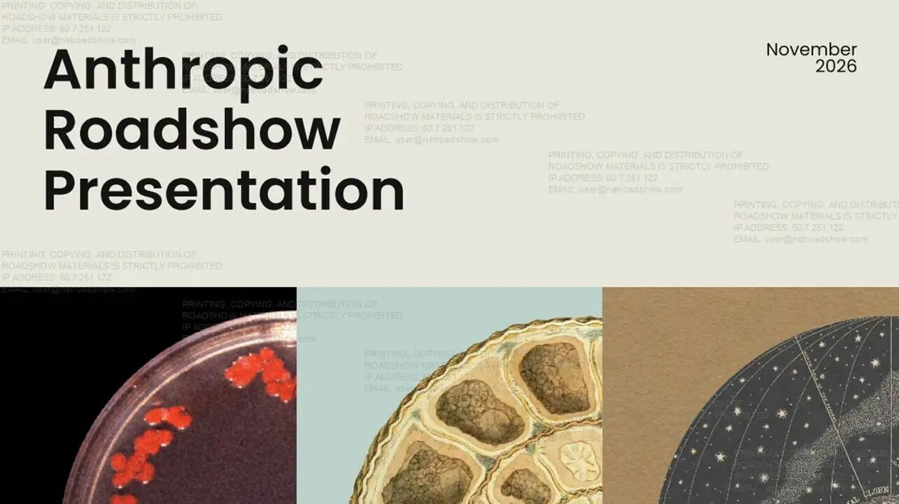

Anthropic 路演纪要全文+PPT

1/4
Anthropic 上市不是企业级 AI 生产力渗透的周期顶部（按量 API 与自主智能体正处换挡加速中继），但确实构成了本轮“一级市场估值狂热 + 无上限举债囤算力 + 二线缺电数据中心信贷扩张”的阶段性流动性高潮与分化分水岭。支撑“产业中继”的一阶硬数据是：9M26 收入达 $332.42 亿（26Q3 单季 $169.60 亿、10 月末 ARR 约 $810 亿），约…

Anthropic 上市不是企业级 AI 生产力渗透的周期顶部（按量 API 与自主智能体正处换挡加速中继），但确实构成了本轮“一级市场估值狂热 + 无上限举债囤算力 + 二线缺电数据中心信贷扩张”的阶段性流动性高潮与分化分水岭。支撑“产业中继”的一阶硬数据是：9M26 收入达 $332.42 亿（26Q3 单季 $169.60 亿、10 月末 ARR 约 $810 亿），约…

Airship AI (NASDAQ: AISP) 披露 2026Q3 财报与 SEC Form 10-Q：Q3 单季营收同比增长 429% 至 $6.23M（前三季度累计 $16.71M），毛利率提升至 56.2%，季末现金 $12.74M；直接回应 $30.6M backlog…